Dictionaries in, dictionaries out
Gregory S. DeLozier, PhD
| Peewee | Dataset | |
|---|---|---|
| You start with | Model classes | A database, or a dictionary |
| Rows are | Objects | Dictionaries |
| The schema comes from | The models | The database, or the first rows |
| Suits | Applications with rules | Exploration and scratch work |
How much structure should the code impose?
python3 -m venv .venv
source .venv/bin/activate
python3 -m pip install -r requirements.txt
python3 -m pip show datasetdataset==2.0.0
Flask==3.1.3
tzdata==2026.4Python 3.10 or newer.
import dataset
db = dataset.connect("sqlite:///pets.db")
print(db.tables)
print(db["pets"].columns)
print(len(db["pets"]))['kind', 'pets']
['id', 'name', 'age', 'kind_id', 'owner']
4No model classes.
OrderedDict({'id': 1, 'name': 'Suzy', 'age': 3,
'kind_id': 1, 'owner': 'Greg'})dict(row), row.get("age"), JSON.
pets.find(kind_id=[1, 3])
pets.find(age={">=": 3}, order_by="-age", _limit=2)
pets.count(kind_id=1)
pets.distinct("owner")| Operator | Meaning |
|---|---|
> >= <
<= != |
Comparison |
in notin between |
Sets and ranges |
like ilike startswith
endswith |
Text |
for row in db.query(
"select kind_id, count(*) as n "
"from pets group by kind_id"):
print(dict(row)){'kind_id': 1, 'n': 2}
{'kind_id': 2, 'n': 1}
{'kind_id': 3, 'n': 1}Postponed, not hidden.
pets.insert({"name": "Buddy", "age": 5, ...})
pets.insert_many([...])
pets.update({"name": "Buddy", "age": 6}, ["name"])
pets.upsert({"name": "Buddy", "age": 7}, ["name"])
pets.delete(name="Tom")| Call | Returns |
|---|---|
insert |
New row identifier |
update |
Rows changed |
upsert |
True when updated; new identifier when inserted |
delete |
True if a row went |
with Blockwith dataset.connect("sqlite:///pets.db") as tx:
tx["pets"].insert({"name": "Inside", ...})
tx["pets"].insert({"name": "Bad", "age": -1, ...})The second insert fails: neither row is stored.
| Python value | Column type |
|---|---|
int |
BIGINT |
float |
FLOAT |
bool |
BOOLEAN |
date, datetime |
DATE, timestamp |
dict |
JSON |
| anything else | TEXT |
Plus an integer id.
['id', 'name', 'age', 'kind_id', 'owner']
['id', 'name', 'age', 'kind_id', 'owner', 'breed']Old rows: breed is NULL. A typo such as
aeg becomes a column too.

| Full Alembic | What dataset uses |
|---|---|
| Versioned migration scripts | No |
alembic_version table |
No |
| Upgrade and downgrade | No |
| Operation that adds a column | Yes |
| Who supplies it | |
|---|---|
NOT NULL, CHECK |
The SQL script; SQLite enforces |
| Rules never written | Nobody |
| Foreign keys | You must turn them on |
| Joins | You, in SQL |
| Write-ahead logging | Dataset, by default |
Without it: a pet with kind_id 999 goes in, and a kind
in use can be deleted.
| Layer | Where |
|---|---|
| Browser | required, type="number" min="0" |
| Route | check_pet_form |
| Table | NOT NULL, CHECK, foreign key in
create_db.sql |
One join query lists the pets. Kind delete: the database refuses; the route reports it.
| Setting | Effect |
|---|---|
mode=ro |
Every write refused |
sqlite_wal_mode=False |
No switch to write-ahead logging |
A file already switched stays switched. Explore a copy.
{'script': 'CJK', 'characters': 28209, ...}
{'script': 'HANGUL', 'characters': 11625, ...}But the first character row said 'script': 'SPACE'.
The script column is the first word of the
name.
| Direct SQL | Peewee | Dataset | |
|---|---|---|---|
| You write | SQL | Models | Dictionaries |
| Rules declared in | SQL | Models | SQL, outside |
| Changing a table | By hand | Manual or tool | Automatic, unreviewed |
| Suits | Full control | Applications | Exploration |
Pick an SQLite database you did not create.
Write down each guess before you test it.
Which guesses were wrong?
Save one result to a CSV file.
Dictionaries: explore quickly.
SQL: declare the rules.
Foreign keys: turn them on.